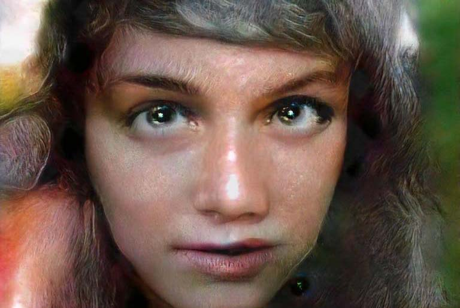
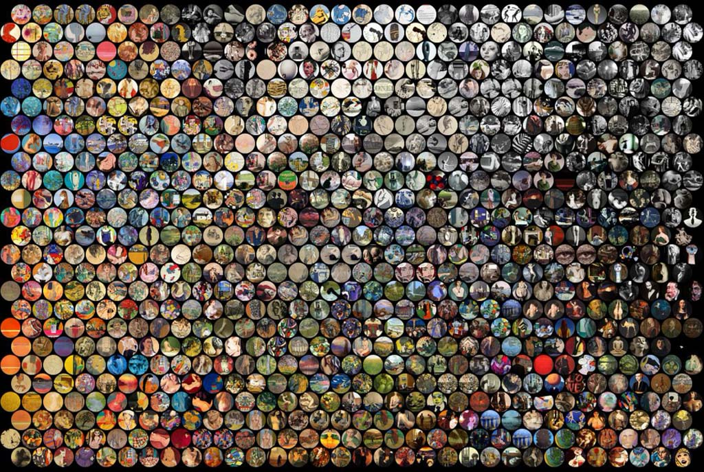

United States,1988
Adam is a Los Angeles based artist, illustrator, and educator working with code.
A trained photographer who works in the dark room of Otis College, Adam Ferriss applies state-of-the-art code for generative image synthesis. Neural networks create strange artifacts and new aesthetics within his own photographs

United States,1988
Mike Tyka studied Biochemistry and Biotechnology at the University of Bristol. Mike works with artificial neural networks as an artistic medium and tool. His artistic work has focused both on traditional sculpture and modern technology, such as 3D printing and artificial neural networks.
United States,1972
Golan Levin created some of the earliest digital art, combining computer vision and installation artwork. He’s continued his practice as Project Manager for Terrapattern, a visual search tool for satellite imagery. As the Director of the STUDIO for Creative Inquiry at CMU, he also organizes events like WEIRD REALITY, which focuses on VR and AR practices.
Netherlands, 1983
Menkman’s work focuses on noise artifacts that result from accidents in both analogue and digital media (such as glitch and encoding and feedback artifacts). The resulting artifacts of these accidents can facilitate an important insight into the otherwise obscure alchemy of standardization via resolutions.
Turkey, 1986
Based in Los Angeles, CA, Parag K. MITAL (US) is a computational artist and interdisciplinary researcher obsessed with the nature of information, representation, and attention. Using applied machine and deep learning, film, eye-tracking, EEG, and fMRI recordings, he has worked on computational models of audiovisual perception from the perspective of both robots and humans, often revealing the disjunct between the two. His artistic practice combines generative film experiences, augmented reality hallucinations, and expressive control of large audiovisual corpora.

Germany, 1970
Mario Klingemann is a German artist and Google Arts and Culture resident known for his work involving neural networks, code, and algorithms. He is considered a pioneer in the use of computer learning in the arts. His works examine creativity, culture, and perception through machine learning and artificial intelligence, and have appeared at the Ars Electronica Festival, the Museum of Modern Art New York, the Metropolitan Museum of Art New York, the Photographers’ Gallery London, the Centre Pompidou Paris, and the British Library.
All images and artwork Copyright © by original artists. Hayley Sinnatt Inc. All rights reserved.